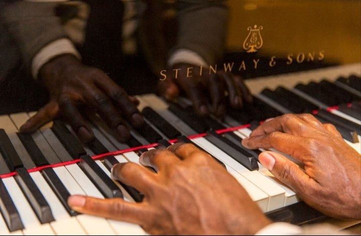

Homenagem
Um tributo à memória de Dona Sebastiana e de Seu Raimundo, contado através da música.
Um grande tributo em homenagem e memória de Dona Sebastiana Florentina Monteiro e de seu esposo, Raimundo Rosa Moreira. Idealização e coordenação de Adão Rosa Monteiro.
O Musical Sebastiana é um grande tributo familiar em homenagem e memória de Dona Sebastiana Florentina Monteiro e de seu esposo, Raimundo Rosa Moreira.
Produzido e realizado periodicamente pelos seus filhos, o projeto tem idealização e coordenação de Adão Rosa Monteiro.
Um tributo à memória de Dona Sebastiana e de Seu Raimundo, contado através da música.
Produzido e realizado periodicamente pelos filhos, reunindo a família em torno da música.
A história de uma família da Comunidade Quilombola São Sebastião da Boassara, em Patos de Minas (MG).
Dê o play, compartilhe com quem você ama e inscreva-se no canal para acompanhar cada nova edição do projeto.

Clique em qualquer vídeo para assistir aqui mesmo, ou abra direto no YouTube.
Adão Rosa Monteiro é quilombola da Comunidade São Sebastião da Boassara, em Patos de Minas (MG). Acompanhe a comunidade e o artista nas redes e faça parte dessa história.
Raízes · Instagram da comunidadeComunidade Quilombola São Sebastião da Boassara@quilombosaosebastiao Instagram do artistaAdão Rosa Monteiro@adaomonteirooficialSemana da Consciência Negra20/11 · Vozes Ancestrais em Patos de Minas · 21/11 em São Paulo
Inscreva-se no canal, compartilhe os vídeos e fale com a produção para levar Adão Rosa Monteiro e o Musical Sebastiana ao seu palco.
Falar com a produção no WhatsApp Produção · WhatsApp(11) 96054-2083